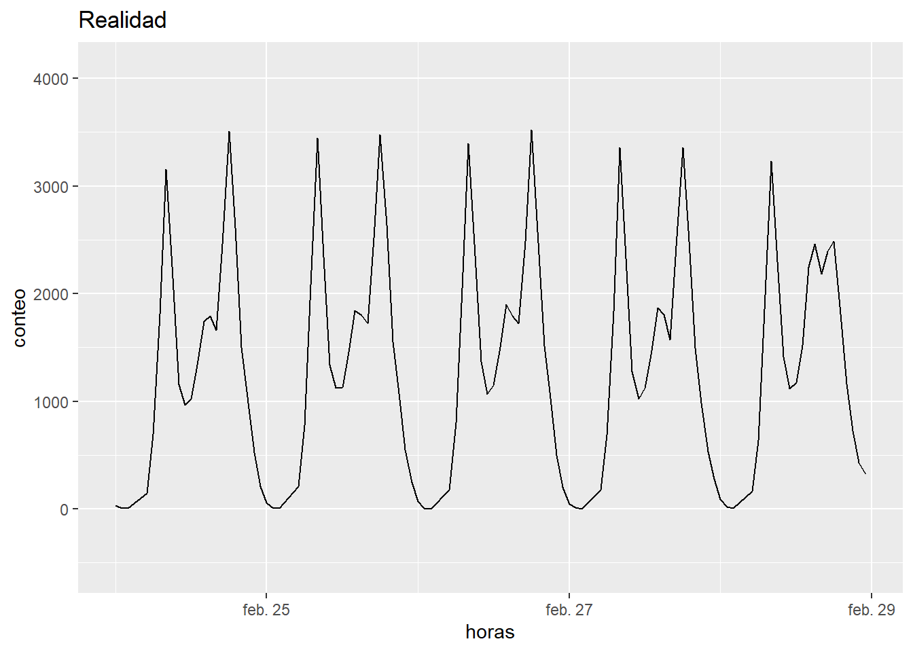

# Especial para todo lo que tiene que ver con fecha en R, muy bueno para trabajar series de tiempo de forma conjunta#install.packages('libridate')library(lubridate)
Loading required package: timechange
Attaching package: 'lubridate'
The following objects are masked from 'package:base':
date, intersect, setdiff, union
viajes_diarios <- raw_data %>%# Transformamos la variable raw_data, creando una variable que se llame fecha_hora# organiza el formato de fecha, primero Fecha_Retiro formato dmy y posterior Hora_Retiro hmsmutate(fecha_hora =dmy_hms(paste(Fecha_Retiro, Hora_Retiro))) %>%# Filtrar para fecha_hora datos mayores al 24 de febrerofilter(fecha_hora >=as.Date('2020-02-24'), fecha_hora <=as.Date('2020-02-27')) %>%group_by(horas =floor_date(fecha_hora, unit ='hour')) %>%# n() Cuenta los registros por hora summarise(conteo =n())
rellenando ceros
horas_completas <-data.frame(# creo un dataframe con la variable horas, la creo con una secuencia que inivia con floor_date del minimo de los viajes diarios en las horas con la unidad en horas y termina en floor_date del maximo de los viajes diarios en las horas con unidad de hora horas =seq(floor_date(min(viajes_diarios$horas), unit ='hour'),floor_date(max(viajes_diarios$horas), unit ='hour'),by ='hour'))
left join para unir viajes con horas
viajes_hora <- horas_completas %>%group_by(horas_redondeadas =floor_date(horas, unit ='hour')) %>%# se unen los dataframes por las horasleft_join(viajes_diarios) %>%# para agregar los ceros, vamos a mutar la variable conteo, le agregamos la función ifelse, asigna una condicion a cumplir y asignar valoresmutate(conteo =ifelse(is.na(conteo), 0, conteo))
Joining, by = "horas"
# lo anterior significa que si cuando hemos unido a traves de left join hay un na, agregue cero y de lo contrario agregue el valor
grafica de líneas inicial
ggplot(data = viajes_diarios,aes(x = horas,y = conteo)) +# agregamos una capa de geom_linegeom_line()
creando objeto ts para el modelo
# metemos los conteos en una variable (conteo de series de tiempo)conteos_ts <-ts(viajes_hora$conteo,# asignamos un inicio, en este caso es 1start =1,frequency =24)
# uno de los mejores paquetes para hacer series de tiempo#install.packages('forecast')
cargar la libreria
library(forecast)
Registered S3 method overwritten by 'quantmod':
method from
as.zoo.data.frame zoo
ajuste del modelo
# esta funcion lo que hace es calcular todos los parámetros de la arimaajuste <-auto.arima(y = conteos_ts)
resumen del ajuste
summary(ajuste)
Series: conteos_ts
ARIMA(3,1,0)(1,1,0)[24]
Coefficients:
ar1 ar2 ar3 sar1
-0.3454 -0.2328 0.0394 -0.272
s.e. 0.1452 0.1491 0.1419 0.194
sigma^2 = 3136: log likelihood = -254.81
AIC=519.62 AICc=521.08 BIC=528.87
Training set error measures:
ME RMSE MAE MPE MAPE MASE ACF1
Training set -1.164243 43.2755 24.45498 NaN Inf 0.4549763 -0.006269555
hacer las predicciones
predicciones <-forecast(ajuste)
calcular el valor minimo de las predicciones
# como es una lista colocamos lowermin(predicciones[['lower']])
[1] -551.5396
calculamos el valor maximo de las predicciones
# como es una lista colocamos lowermax(predicciones[['upper']])
[1] 4103.783
grafica de las predicciones
# autoplot viene en forcast, automáticamente calcula las barras de confianza y lo demásp_predict <-autoplot(predicciones)
ver la grafica
# la linea azul es el valor promedio estimado que es cuanto deberia valer el conteo o cuantas bicicletas estan en circulacion para cierta hora del dia, captura o repite muy bien el patron de la antiguedad, la banda distorcionada, sería como un poco el error o la banda de confianza, para el ultimo día la banda es mas ancha, significa que misntras mas queramos predecir hacia el futuro, mas grande será el margen de error p_predict
graficando toda la semana procesamiento de datos
viajes_diarios <- raw_data %>%# Transformamos la variable raw_data, creando una variable que se llame fecha_hora# organiza el formato de fecha, primero Fecha_Retiro formato dmy y posterior Hora_Retiro hmsmutate(fecha_hora =dmy_hms(paste(Fecha_Retiro, Hora_Retiro))) %>%# Filtrar para fecha_hora datos mayores al 24 de febrerofilter(fecha_hora >=as.Date('2020-02-24'), fecha_hora <=as.Date('2020-02-29')) %>%group_by(horas =floor_date(fecha_hora, unit ='hour')) %>%# n() Cuenta los registros por hora summarise(conteo =n())
rellenando ceros
horas_completas <-data.frame(# creo un dataframe con la variable horas, la creo con una secuencia que inivia con floor_date del minimo de los viajes diarios en las horas con la unidad en horas y termina en floor_date del maximo de los viajes diarios en las horas con unidad de hora horas =seq(floor_date(min(viajes_diarios$horas), unit ='hour'),floor_date(max(viajes_diarios$horas), unit ='hour'),by ='hour'))
left join para unir viajes con horas
viajes_hora <- horas_completas %>%group_by(horas_redondeadas =floor_date(horas, unit ='hour')) %>%# se unen los dataframes por las horasleft_join(viajes_diarios) %>%# para agregar los ceros, vamos a mutar la variable conteo, le agregamos la función ifelse, asigna una condicion a cumplir y asignar valoresmutate(conteo =ifelse(is.na(conteo), 0, conteo))
Joining, by = "horas"
# lo anterior significa que si cuando hemos unido a traves de left join hay un na, agregue cero y de lo contrario agregue el valor
grafica de líneas inicial
ggplot(data = viajes_diarios,aes(x = horas,y = conteo)) +# agregamos una capa de geom_linegeom_line()+ylim(-551.5396, 4103.783) +labs(title ='Realidad')

# como al modelo noo había como explicarle lo ocurrido los viernes, no podia capturarlo y solo se basaba en lo que tenia, ya recalculando los datos con las predicciones, ahora si es capaz de mostrarlo